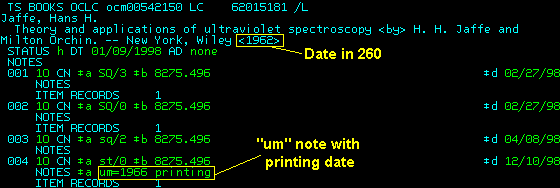
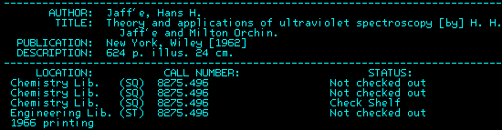

[Top] - Retrospective Conversions Procedural Outline
 |
Decisions: Imprint Dates
From contract:
|
If either the card or the record has both copyright and publication dates, and the other has only one date, they may be considered a match if the only date in one record matches either date in the other. Examples:
|
For cards returned from OCLC, when deciding whether to create a record for a new edition, follow the above practice, but put the variant date in an um note along with the word printing.
Example: copy record had date of c1962.

Public display:
